Slide p. 2: superposition works for linear circuits only. In a circuit with several independent sources, any response (a current or a voltage) equals the sum of the responses with each source acting alone while the others are "killed". In each problem's simulation, panels ①, ②, ③ are the circuit with one source left (dashed yellow circle = a killed source) and the last panel is the real circuit. Press ▶ Next step one step at a time: the panel being worked has a yellow frame, its dots start once it is done, and the dots of the real circuit run once the results are added. This page has 5 problems, one after another (Ex 1, Ex 2, homework 1, and exercises Ex.1 and Ex.2), after a linearity simulation on the circuit of slide p. 3.
It works for linear circuits only (resistors, sources and linear dependent sources).
Take one independent source at a time and "kill" all the others: a voltage source → short circuit (0 V, but current can flow), a current source → open circuit (0 A, but a voltage can appear across it).
Never kill a dependent source; leave it in the circuit every time.
Each small circuit is usually simple enough for a voltage or current divider, then add the results minding direction and polarity; a part that runs against the reference is negative.
Never add powers: power goes with the square of the current, so add the currents or voltages first, then compute the power.
Slide p. 3 shows what killing a source means: a 0 V voltage source is a short (no voltage across it, but current can flow) and a 0 A current source is an open circuit (no current, but a voltage can appear across it). Pages 4–5 give the six steps: take one source at a time and kill the others, name the parts with primes such as \(v'\), \(i''\), analyse the small circuit, repeat for every source, add the results minding polarity and direction, and never add powers.
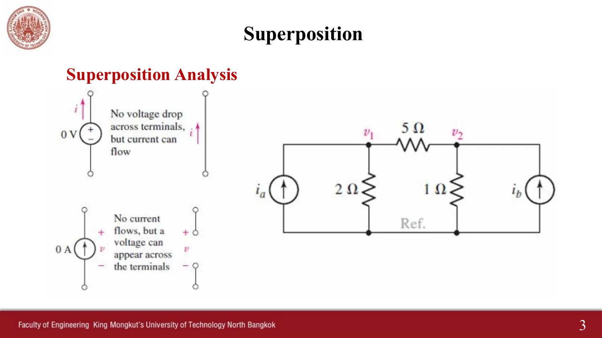
สไลด์หน้า 3 · แตะรูปเพื่อขยายSlide p. 3 · tap to enlarge
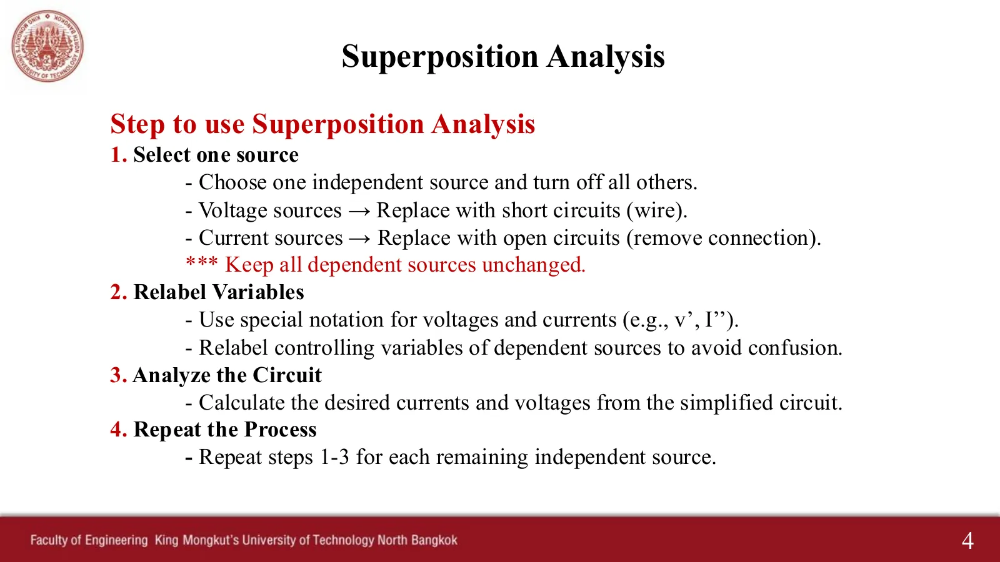
สไลด์หน้า 4 · แตะรูปเพื่อขยายSlide p. 4 · tap to enlarge
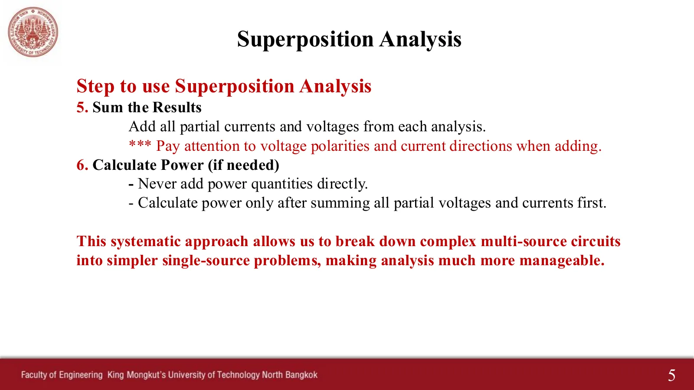
สไลด์หน้า 5 · แตะรูปเพื่อขยายSlide p. 5 · tap to enlarge
ดูสไลด์ที่ผู้สอนเขียนในห้อง (พ.ศ. 2564) และสรุปวิธีในไฟล์เฉลยแบบฝึกหัดSee the slides as written in class (2021) and the summary in the exercise solutions file
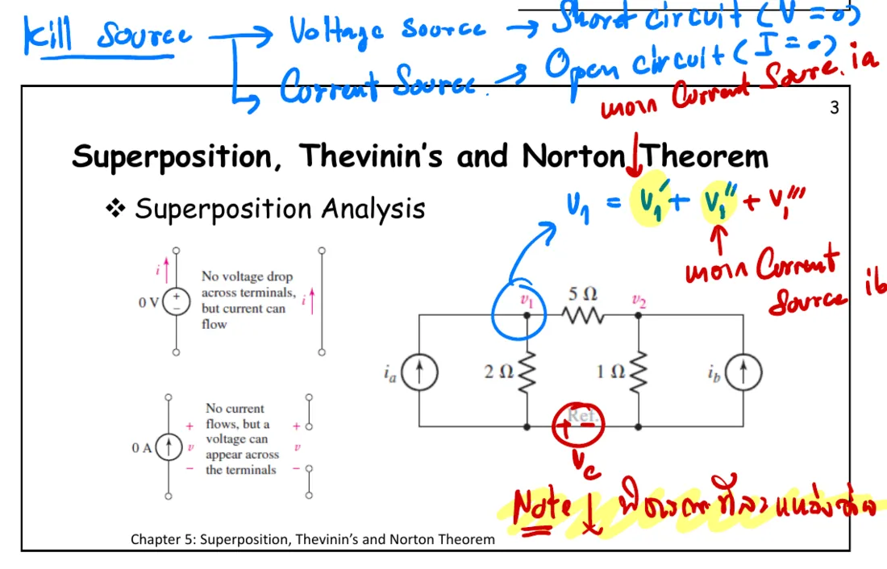
หน้า 3: วิธีฆ่าแหล่งจ่ายที่เขียนไว้ระหว่างสองสไลด์ และ \(v_1 = v_1' + v_1''\) โดยเปิดแหล่งจ่ายกระแสทีละตัวp. 3: how to kill a source, written between the two slides, and \(v_1 = v_1' + v_1''\) with one current source opened at a time
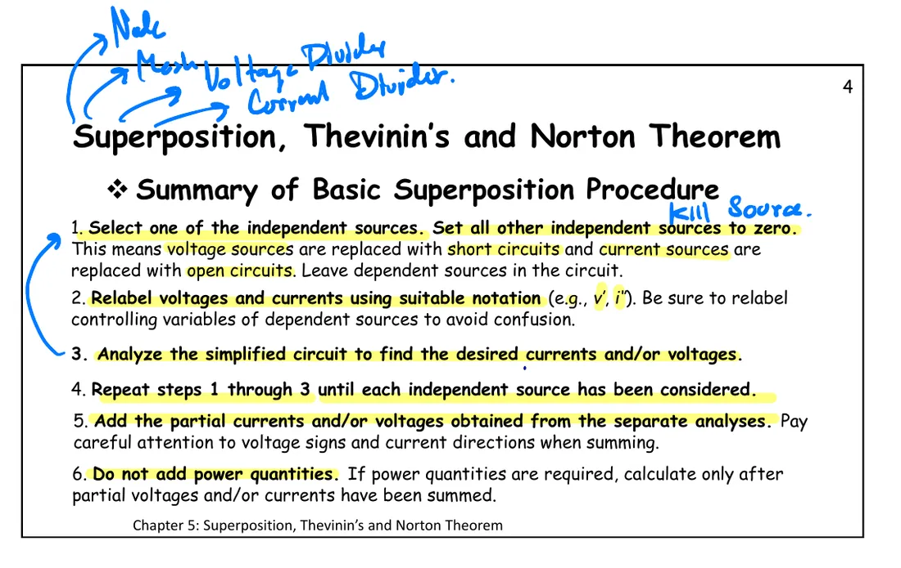
หน้า 4 (สรุปขั้นตอน): ขั้นที่ 3 วิเคราะห์วงจรย่อยด้วยวิธีโนด วิธีเมช ตัวแบ่งแรงดัน หรือตัวแบ่งกระแสp. 4 (the procedure): step 3 solves each small circuit by nodal or mesh analysis, or a voltage or current divider
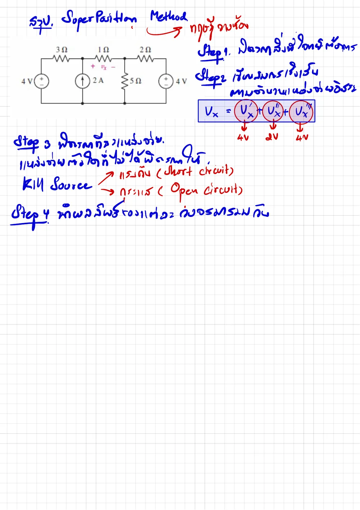
สรุปวิธีซ้อนทับสี่ขั้นในไฟล์เฉลยแบบฝึกหัด 5.1 (ใช้วงจรของการบ้านข้อ 1)The four-step summary of superposition in the solutions file of exercise sheet 5.1 (on the circuit of homework 1)
Panel ① keeps only \(i_a\) (\(i_b\) killed → open), panel ② only \(i_b\), and the last panel is the real circuit. \(v_1\) of the real circuit always equals the sum of the two panels, and the dots in every resistor of the real circuit run at the summed current too. Press \(i_a \times 2\) and \(v_1'\) doubles exactly.
1
Ex 1: ใช้หลักการซ้อนทับหากระแส \(i_x\)
Ex 1: use superposition to find the current \(i_x\)
สไลด์บทที่ 5 หน้า 6 · Hayt Example 5.1
Chapter 5 slides, p. 6 · Hayt Example 5.1
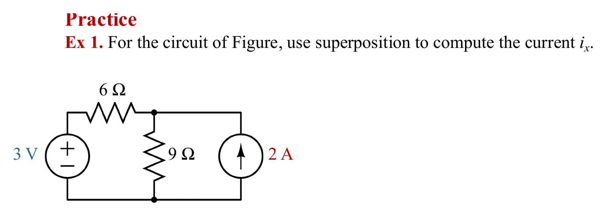
โจทย์จากสไลด์หน้า 6 · แตะรูปเพื่อขยายThe problem, slide p. 6 · tap to enlarge
ดูเฉลยที่ผู้สอนเขียนในห้องSee the teacher's in-class working
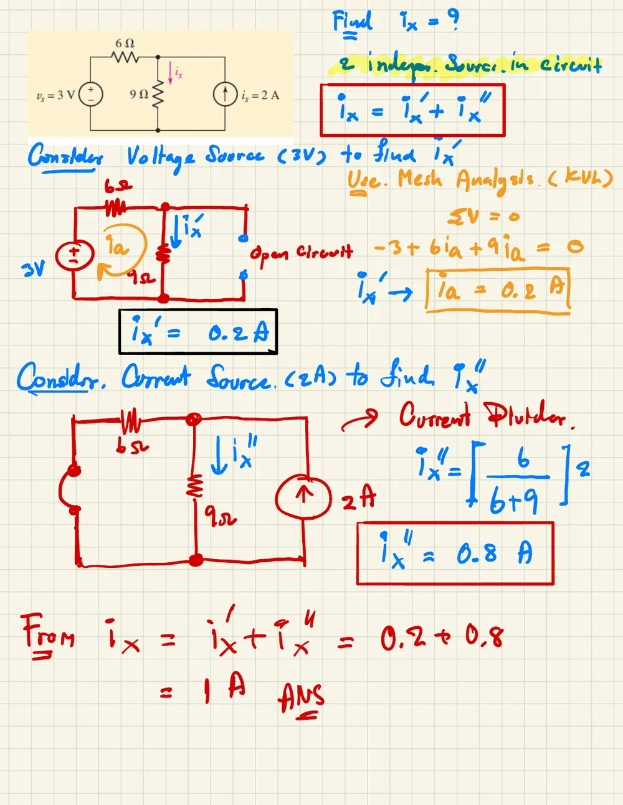
\(i_x' = 0.2\) A จาก KVL รอบเมช \(i_x'' = 0.8\) A จากตัวแบ่งกระแส รวม \(i_x = 1\) A\(i_x' = 0.2\) A from mesh KVL, \(i_x'' = 0.8\) A from the current divider, \(i_x = 1\) A
2
Ex 2: ใช้หลักการซ้อนทับหากระแส \(i_x\)
Ex 2: use superposition to find the current \(i_x\)
สไลด์บทที่ 5 หน้า 7 · Hayt Practice 5.1
Chapter 5 slides, p. 7 · Hayt Practice 5.1
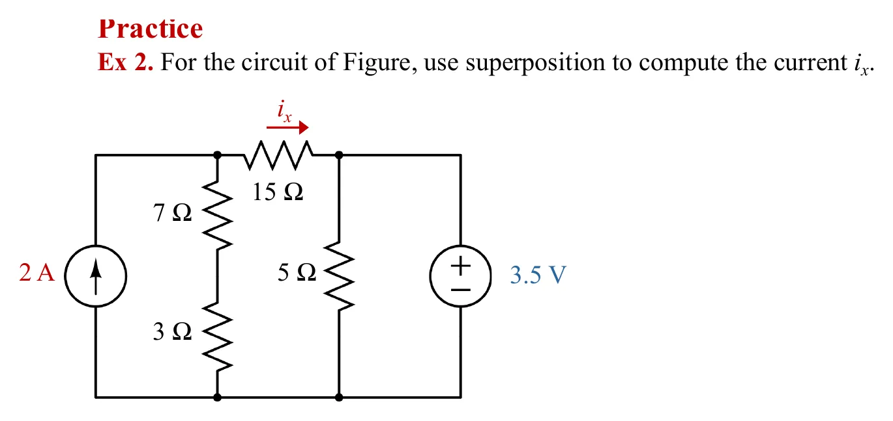
โจทย์จากสไลด์หน้า 7 · แตะรูปเพื่อขยายThe problem, slide p. 7 · tap to enlarge
ดูเฉลยที่ผู้สอนเขียนในห้องSee the teacher's in-class working
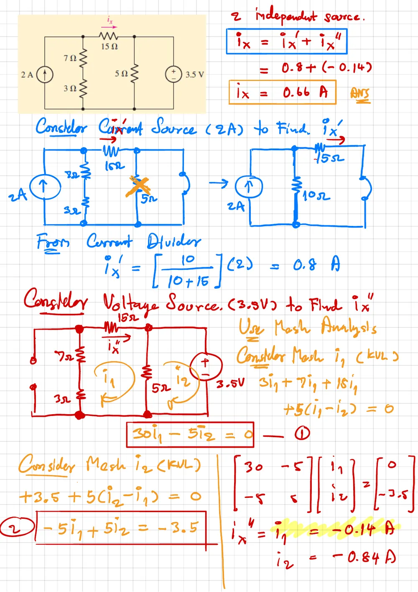
\(i_x' = 0.8\) A จากตัวแบ่งกระแส \(i_x'' = -0.14\) A จากวิธีเมช รวม 0.66 A\(i_x' = 0.8\) A from the current divider, \(i_x'' = -0.14\) A by meshes, 0.66 A in all
3
การบ้านข้อ 1: ใช้หลักการซ้อนทับหาแรงดัน \(v_x\)
Homework 1: use superposition to find the voltage \(v_x\)
สไลด์บทที่ 5 หน้า 21 (Problems ข้อ 1)
Chapter 5 slides, p. 21 (Problems, no. 1)
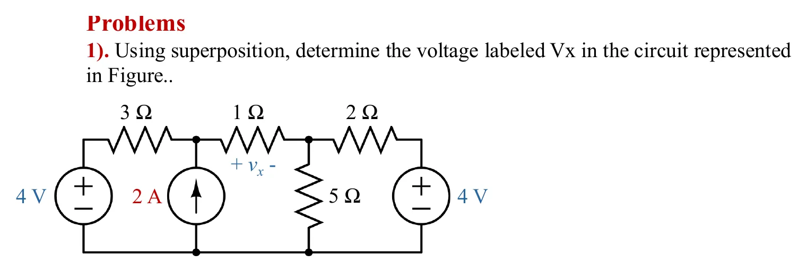
โจทย์จากสไลด์หน้า 21 (ปิดคำตอบที่พิมพ์ไว้) · แตะรูปเพื่อขยายThe problem, slide p. 21 (the printed answer is covered) · tap to enlarge
ดูเฉลยที่ผู้สอนเขียนในห้องSee the teacher's in-class working
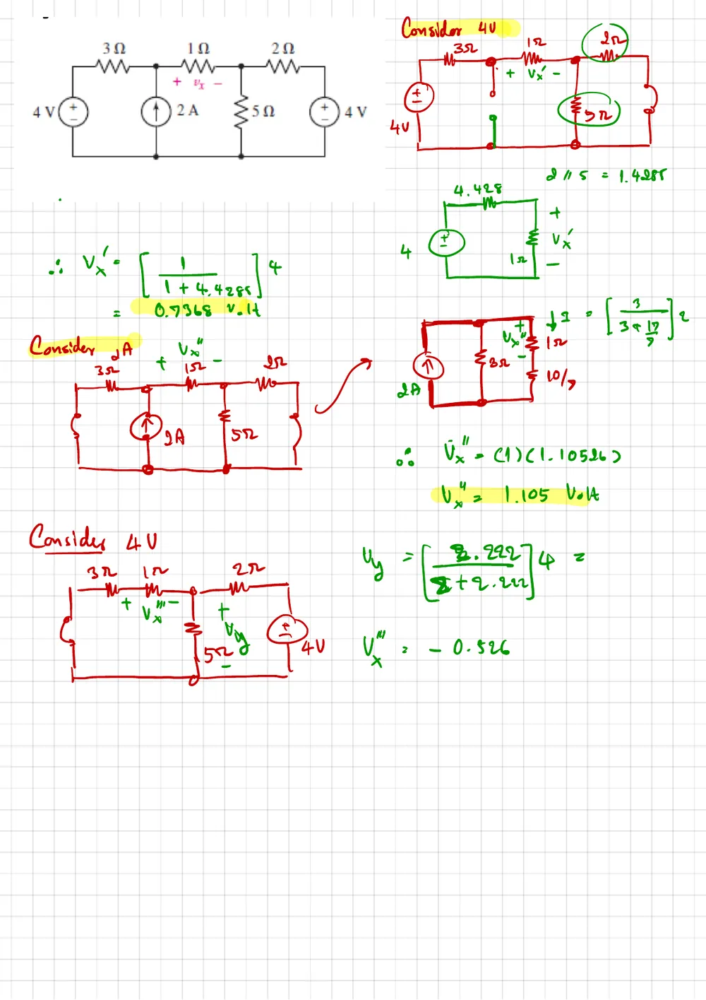
\(v_x' = 0.7368\) V, \(v_x'' = 1.105\) V, \(v_x''' = -0.526\) V (ในห้องไม่ได้เขียนผลรวม)\(v_x' = 0.7368\) V, \(v_x'' = 1.105\) V, \(v_x''' = -0.526\) V (the class did not write the sum)
แบบฝึกหัดเพิ่มเติม (ชุด 5.1 Superposition and Source Transformation)
More practice (exercise sheet 5.1, Superposition and Source Transformation)
Exercise Ex.2: find the current \(I_x\) by superposition
แบบฝึกหัด 5.1 ข้อ Ex.2 · มีเฉลยลายมือ
Exercise sheet 5.1, Ex.2 · handwritten solution available
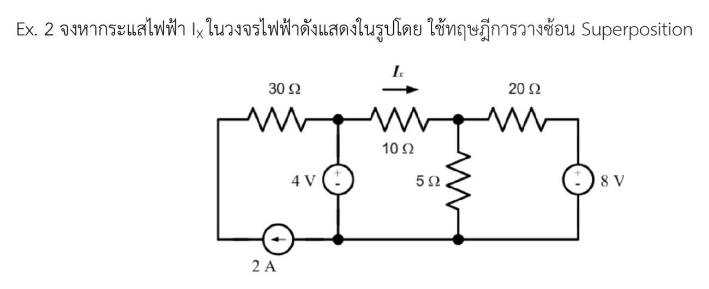
โจทย์แบบฝึกหัด Ex.2 · แตะรูปเพื่อขยายExercise Ex.2 · tap to enlarge
ดูเฉลยลายมือSee the handwritten solution
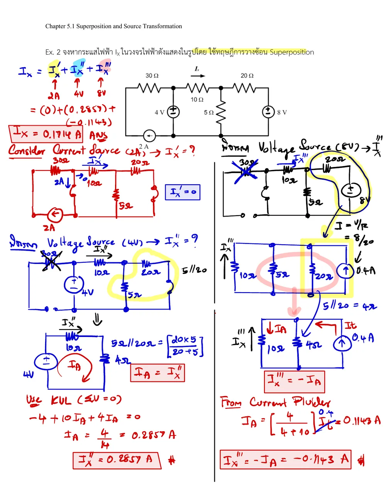
0 + 0.2857 − 0.1143 = 0.1714 A (ส่วนที่สามใช้การแปลงแหล่งจ่าย หน้า 5.3)0 + 0.2857 − 0.1143 = 0.1714 A (the third part uses a source transformation, page 5.3)
ลองทำดู 1 — ฆ่าแหล่งจ่ายให้ถูกแบบ
ข้อ 2 (Ex 2) ภาพ ①: แหล่งจ่าย 3.5 V ถูกลัดวงจร 5 Ω จึงถูกลัดไปด้วย (เมื่อจุดวิ่งแล้ว ชี้เมาส์ที่ 5 Ω จะเห็นกระแสเป็นศูนย์)
สไลด์บทที่ 5 หน้า 2–7, 21 · แบบฝึกหัด 5.1 Ex.1, Ex.2 และเฉลย · Hayt §5.1, Example 5.1, Practice 5.1
Try this 1 — kill each source the right way
Problem 2 (Ex 2), panel ①: the 3.5 V source is shorted, so the 5 Ω is shorted too (once the dots run, hover over the 5 Ω: its current is zero).
Panel ②: the 2 A source is opened, so the 7 + 3 Ω branch connects to the rest only along the top.
Kill a source the wrong way (shorting a current source) and the answer is wrong at once, because the small circuit changes.
Try this 2 — zero and negative parts
Problem 4 (exercise Ex.1), panel ①: the 6 V causes no current at all in the vertical 4 kΩ, because there is no way back (only the bottom 6 kΩ joins the two sides).
Panel ③: the 12 V current flows down through the vertical 4 kΩ, against the \(I_x\) arrow, so \(I_{x3}\) = −1.5 mA and the dots there run down.
Problem 3 (homework 1), panel ③: \(v_x'''\) is negative because the current crosses the 1 Ω from right to left, against the + of \(v_x\).
Try this 3 — powers do not add
Problem 1 (Ex 1), step to the end: the real power in the 9 Ω is (1)²(9) = 9 W, but adding the powers of the panels gives only 6.12 W.
In section A press \(i_b = 0\), then \(i_a \times 2\): \(v_1\) doubles, but the power in the 2 Ω quadruples.
Question: can superposition be used when the circuit has a dependent source, and what must be done with that dependent source?
Chapter 5 slides, pp. 2–7, 21 · exercise sheet 5.1 Ex.1, Ex.2 and solutions · Hayt §5.1, Example 5.1, Practice 5.1